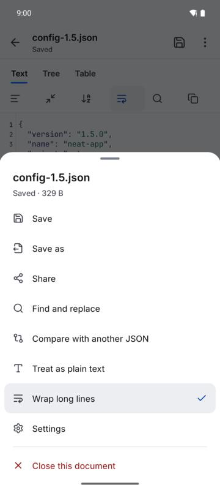
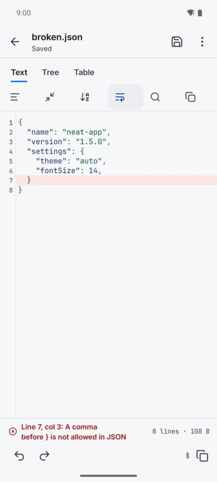
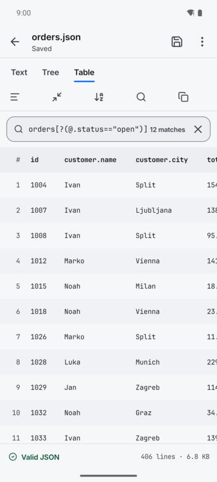
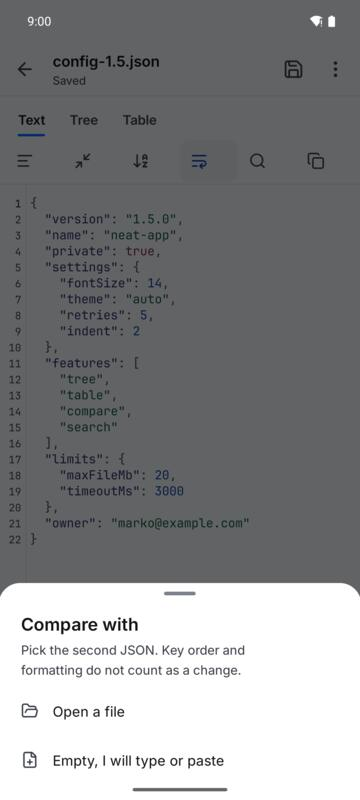
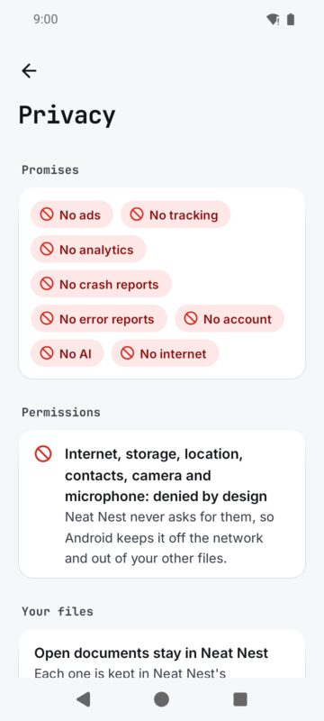

The home screen
The name sits at the top with Settings at the far right. Below it, Open a file, then four tiles: New JSON, New text, Paste and Compare JSON. Paste starts a document from what you copied last.
Open documents lists what you are working on, each with whether it is saved. Its three dots give Open, Compare with another JSON and Close. Recent files shows the last four files you opened (six on a tablet) and ends in a See all row with the whole list. A recent file's three dots can remove it from the list. On the very first start there is nothing open yet, and Try the sample opens a small JSON file to try the views on.
On your home screen holds the two widget keys, Quick actions widget and Recent files widget. On a tablet, the open and recent files sit in a column on the right.


Open and save a file
Tap Open a file and pick it in Android's file picker. Or start from another app: tap a .json or .txt file in Files, Gmail or Drive and pick Neat Nest. When Android asks, tap Always to open such files in Neat Nest every time. If another app already opens JSON files, the home screen names it and has a button to its app info, where Open by default, Clear defaults sets it free. Show me how explains the steps; Got it hides the card.
You can also Share a file or some text to Neat Nest, and select JSON in any app and pick Open in Neat Nest from the menu that appears.
Everything you type is kept on the phone as you type. The line under the name says where the file stands: Saved, Changes not saved, or Not saved to a file. The save button at the top writes back to the same file. The three dots at the top right open More, a sheet from the bottom:
- Save and Save as
- Save writes back to the file; Save as writes a copy wherever you pick. A document that came without a file asks where to save the first time. In Compare there is also Save the right side.
- Share
- Sends the text to another app.
- Find and replace
- Opens the find bar, see the Text view.
- Compare with another JSON
- Starts Compare, or Exit compare while it is on.
- Treat as plain text, or Treat as JSON
- Switches a file between the JSON views and plain text.
- Wrap long lines
- On when it has a tick.
- Settings
- Opens Settings.
- Close this document
- Last, in red. It removes the document from Neat Nest; your file stays where it is. A text that was never saved to a file asks first.
A document that was never saved to a file gets its name from you: tap the name at the top to change it.
The Text view
For JSON, the Text, Tree and Table tabs sit under the top bar, with the tools in a row under them: Format, Compact, Sort keys, Wrap, Find and Copy all (Expand all and Collapse all in the Tree view). On a phone the tools are icons; touch and hold one to see its name. On a wide screen they carry their names.
- Line numbers and colours
- Keys, strings, numbers and true, false and null each have a colour. Turn colours or line numbers off in Settings.
- Status
- At the bottom: Valid JSON, or the line and column of the first error with what is wrong, plus the line count and size. Tap an error to jump to it.
- Undo, redo and the path
- Under the status: undo and redo, then the path of the value under the cursor, like
$.orders[3].total, with a copy button. While the keyboard is up the two rows fold into one. - Key row
- Over the keyboard: { } [ ] : , " and Tab. Turn it off in Settings.
- Wrap
- Folds long lines to the screen. Turn it off and each line stays one line, and the text scrolls sideways as well as up and down.
- Find and replace
- The search tool opens find and replace, with Previous, Next, Replace and All.
- Format, Compact, Sort keys
- Format indents with 2 spaces (or 4, in Settings), Compact removes the spaces, Sort keys orders every object's keys. They work from any view. Numbers keep their exact digits.


The Tree view
Tap an object or array to open or close it. Tap a value, or the three dots on any row, for Edit value, Copy value, Copy path, Open everything inside (on an object or array) and Delete, last in red. Typed values keep their type: 42 is a number, true a boolean, null null, anything else text. Expand all and Collapse all are in the tool row. Arrays show 200 items at a time, with a Show more row at the end. A tree edit writes the whole file back formatted.
The Table view
An array of objects, or an object that holds one, becomes a table. Nested keys become dotted columns like customer.city. Tap a column header to sort it up, again for down, again to go back. Tap a cell to see all of it and copy it. Tables show the first 1,000 rows.


JSONPath filter
In the Tree and Table views, type a query in the filter box at the top:
- $.store.book[0].title
- names and indexes; the leading $ is optional
- items[-1] and items[1:3]
- from the end, and slices
- $.a[*] and $..id
- every child, and every id at any depth
- users[?(@.age >= 18)]
- filters with == != < <= > >=, =~ /regex/i, &&, || and !
The box shows how many match. Tap a match for Show in the tree, Copy value and Copy path. In the Table view the matches become the rows. The cross clears the filter.

Compare two JSON files
Start it from More, Compare with another JSON, from the Compare JSON tile on the home screen, or from the Quick actions widget. Pick the second JSON: Open a file, Paste from the clipboard, another open document, or Empty, I will type or paste. Key order and formatting do not count as a change, and array items are lined up by value.
A bar under the top bar holds Exit, Swap sides, and once there is a difference, Previous and Next with where you are, like 1 of 6. Under it the counts: added, removed, changed and the same. Tap a count to list those changes and go to one. In the Tree view changed values are marked with a tilde, added with a plus and removed with a minus, each with its own colour. On a tablet or in landscape the two sides sit next to each other; on a phone, Left and Right tabs switch between them.


Big files
Neat Nest opens files up to 20 MB. Up to about 800 KB the Text view edits everything. Past that, the Text view reads the file and scrolls it smoothly (drag the right edge to move fast), and you change values in the Tree view or with Format, Sort keys and Replace all.
Widgets and shortcuts
Two widgets: Quick actions (Open, New, Paste, Compare) and Recent files. Add them with the keys on Neat Nest's home screen or in Settings, Widgets, or from your home screen's widget list. Touch and hold the app icon for the same shortcuts.
Settings
Settings fills the screen, with Back at the top. In order:
- Look
- Four tiles: Follow the phone (Light by day, Dark at night), Default Light, Default Dark and Black (true black for OLED). These three are held to 7:1 contrast. Under them, Editor themes, in their own colours: a list of 20 popular editor themes such as Dracula, One Dark Pro, Nord and Solarized, with a sample of the editor below.
- Editor
- Text size from 10 to 20 (14 is the default), indent when formatting (2 or 4 spaces), Wrap long lines, Line numbers, JSON colours, Bracket and quote keys over the keyboard, and Plain text files in a reading font, not mono.
- Opening files
- Which app opens JSON files on this phone right now, and How to open files.
- Widgets
- Quick actions and Recent files.
- Privacy
- The promises on red ban chips (No ads, No tracking, No analytics, No crash reports, No error reports, No account, No AI, No internet), and the permissions Neat Nest never asks for. It asks for none at all.
- Help
- User guide, Report a bug or ask for a feature, and Privacy policy.
- Support the developer
- A link to buymeacoffee.com/zanoshky.
- About
- Neat Nest and its version, the privacy line, and the font and icon credits.
Neat Nest follows Android's own font size up to 200 percent and works with TalkBack.

